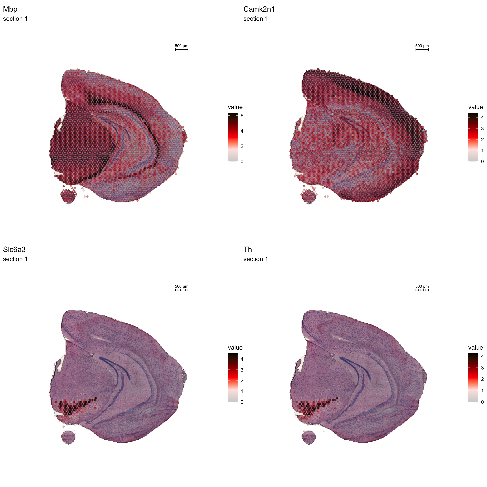
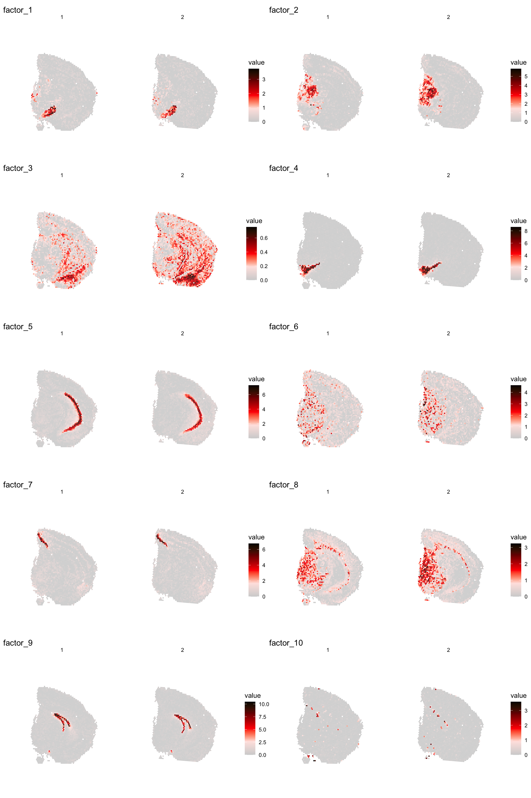
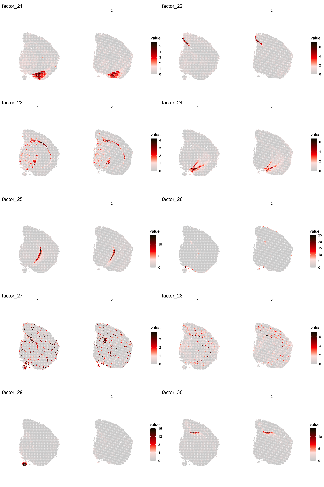
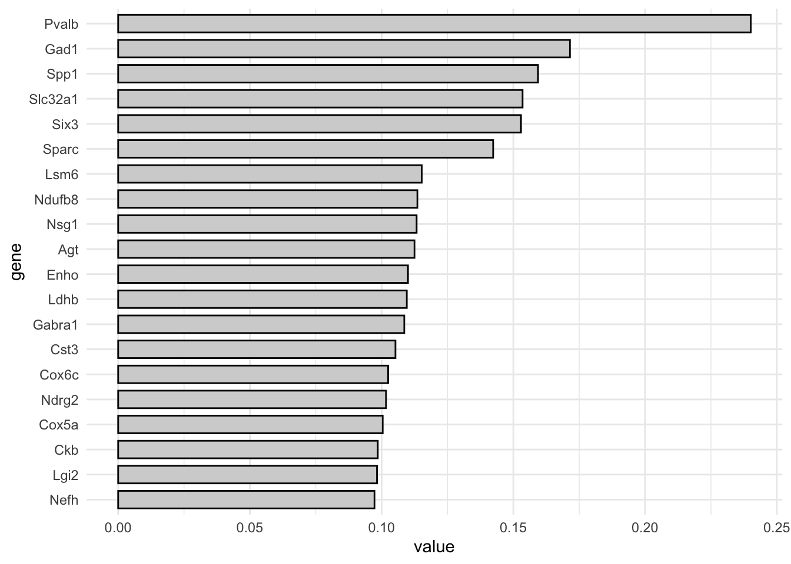
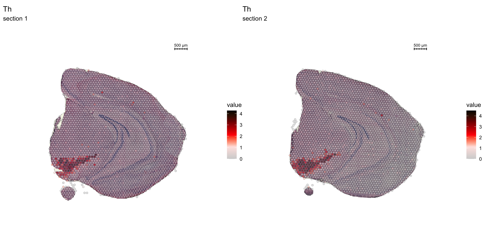
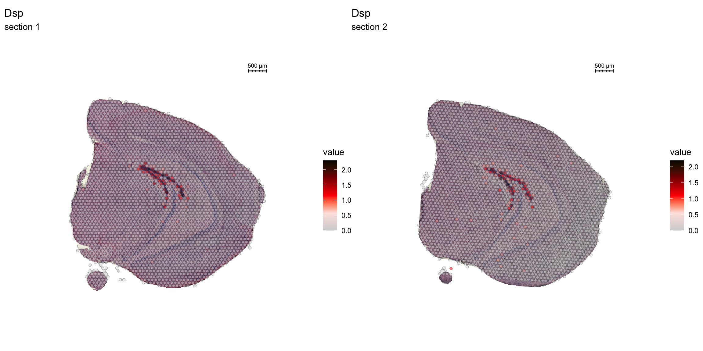

Spatial Features
Last updated: 2022-02-28
Checks: 7 0
Knit directory: STUtility_web_site/
This reproducible R Markdown analysis was created with workflowr (version 1.7.0). The Checks tab describes the reproducibility checks that were applied when the results were created. The Past versions tab lists the development history.
Great! Since the R Markdown file has been committed to the Git repository, you know the exact version of the code that produced these results.
Great job! The global environment was empty. Objects defined in the global environment can affect the analysis in your R Markdown file in unknown ways. For reproduciblity it’s best to always run the code in an empty environment.
The command set.seed(20191031) was run prior to running the code in the R Markdown file. Setting a seed ensures that any results that rely on randomness, e.g. subsampling or permutations, are reproducible.
Great job! Recording the operating system, R version, and package versions is critical for reproducibility.
Nice! There were no cached chunks for this analysis, so you can be confident that you successfully produced the results during this run.
Great job! Using relative paths to the files within your workflowr project makes it easier to run your code on other machines.
Great! You are using Git for version control. Tracking code development and connecting the code version to the results is critical for reproducibility.
The results in this page were generated with repository version 2c7a289. See the Past versions tab to see a history of the changes made to the R Markdown and HTML files.
Note that you need to be careful to ensure that all relevant files for the analysis have been committed to Git prior to generating the results (you can use wflow_publish or wflow_git_commit). workflowr only checks the R Markdown file, but you know if there are other scripts or data files that it depends on. Below is the status of the Git repository when the results were generated:
Ignored files:
Ignored: .Rhistory
Ignored: analysis/.DS_Store
Ignored: analysis/manual_annotation.png
Ignored: pre_data/
Note that any generated files, e.g. HTML, png, CSS, etc., are not included in this status report because it is ok for generated content to have uncommitted changes.
These are the previous versions of the repository in which changes were made to the R Markdown (analysis/Spatial_Features.Rmd) and HTML (docs/Spatial_Features.html) files. If you’ve configured a remote Git repository (see ?wflow_git_remote), click on the hyperlinks in the table below to view the files as they were in that past version.
| File | Version | Author | Date | Message |
|---|---|---|---|---|
| html | 0dafcee | Ludvig Larsson | 2021-05-06 | Build site. |
| html | df62517 | Ludvig Larsson | 2021-05-06 | Build site. |
| Rmd | 99f6029 | Ludvig Larsson | 2021-05-05 | Fixed bug |
| html | 99f6029 | Ludvig Larsson | 2021-05-05 | Fixed bug |
| html | 88b046f | Ludvig Larsson | 2021-05-05 | Build site. |
| html | 2523b70 | Ludvig Larsson | 2021-05-05 | Changed names of docs |
| Rmd | a732f96 | Ludvig Larsson | 2021-05-05 | Changed names of Rmds |
Spatial Auto-correlation
STutility includes a method for finding genes with spatially conserved patterns across the tissue. The ranking method makes use neighborhood networks to compute the spatial lag for each gene, here defined as the summed expression of that gene in neighboring spots. Each gene is then ranked by the correlation between the lag vector and the original expression vector. The output is a data.frame with gene names ranked by decreasing spatial auto-correlation.
This method is partly inspired by work from the Giotto team and we reccomend you to check out their R package Giotto and the related publication; [“Giotto: a toolbox for integrative analysis and visualization of spatial expression data”](https://genomebiology.biomedcentral.com/articles/10.1186/s13059-021-02286-2.
library(spdep)
spatgenes <- CorSpatialGenes(se)By default, the saptial-auto-correlation scores are only calculated for the variable genes in the Seurat object, here we have 3000. Among the top most variable features in our Seurat object, we find genes coding for hemoglobin; “Hbb-bs” “Hba-a1” “Hba-a2”. These are typically expressed in blood vessels which are more randomly distributed across the tissue compared to larger tissue structures. Knowing the spatial auto-correlation can therefore be useful to distinguish genes expressed in larger tissue compartments. One way to make use of this is to restrict the selection of features used for dimensionality reduction and clustering to include ony gene that are highly variable and spatially auto-correlated, and that way avoid clustering based on structures such as blood vessels.
head(VariableFeatures(se))[1] "Hbb-bs" "Hba-a1" "Hba-a2" "Plp1" "Mbp" "Ptgds" spatgenes[c("Hbb-bs", "Hba-a1", "Hba-a2"), ] gene cor
Hbb-bs Hbb-bs 0.3864246
Hba-a1 Hba-a1 0.3285132
Hba-a2 Hba-a2 0.3152952Let’s plot some of the genes with highest spatial auto-correlation.
head(spatgenes) %>%
kbl() %>%
kable_styling()| gene | cor | |
|---|---|---|
| Mbp | Mbp | 0.9203725 |
| Camk2n1 | Camk2n1 | 0.9054777 |
| Slc6a3 | Slc6a3 | 0.8917767 |
| Th | Th | 0.8762578 |
| Nrgn | Nrgn | 0.8744128 |
| Tmsb4x | Tmsb4x | 0.8715944 |
FeatureOverlay(se, features = c("Mbp", "Camk2n1", "Slc6a3", "Th"),
sampleids = 1,
cols = c("lightgray", "mistyrose", "red", "darkred", "black"),
pt.size = 1.5,
add.alpha = TRUE,
ncol = 2)
| Version | Author | Date |
|---|---|---|
| a2036a8 | Ludvig Larsson | 2021-05-05 |
Matrix factorization
The strength of untargeted whole transcriptome capture is the ability to perform unsupervised analysis and the ability to find spatial gene expression patterns. We’ve found good use of using non-negative matrix factorization (NNMF or NMF) to find underlying patterns of transcriptomic profiles. This factor analysis, along with various dimensionality reduction techniques, can all be ran via “RunXXX()”, where X = the method of choice, e.g.:
se <- RunNMF(se, nfactors = 40) # Specificy nfactors to choose the number of factors, default=20.
While RunNMF() is an STutility add-on, others are supported via Seurat (RunPCA(), RunTSNE, RunICA(), runUMAP() ) and for all of them, the output are stored in the Seurat object.
We can then plot a variable number of dimensions across the samples using ST.DimPlot or as an overlay using DimOverlay. These two functions are similar to the ST.FeaturePlot and FeatureOverlay but have been adapted to specifically draw dimensionality reduction vectors instead of features.
NOTE: by default, the colorscale of dimensionality reduction vectors will be centered at 0. If we have a dimensionality reduction vector x this means that the range of colors will go from -max(abs(x)) to max(abs(x)). This behaviour is typically desired when plotting e.g. PCA vectors, but for NMF all values are strictly positive so you can disable this centering by setting center.zero = FALSE.
cscale <- c("lightgray", "mistyrose", "red", "darkred", "black")
ST.DimPlot(se,
dims = 1:10,
ncol = 2, # Sets the number of columns at dimensions level
grid.ncol = 2, # Sets the number of columns at sample level
reduction = "NMF",
pt.size = 1,
center.zero = F,
cols = cscale,
show.sb = FALSE)
| Version | Author | Date |
|---|---|---|
| a2036a8 | Ludvig Larsson | 2021-05-05 |
ST.DimPlot(se,
dims = 11:20,
ncol = 2,
grid.ncol = 2,
reduction = "NMF",
pt.size = 1,
center.zero = F,
cols = cscale,
show.sb = FALSE)
| Version | Author | Date |
|---|---|---|
| a2036a8 | Ludvig Larsson | 2021-05-05 |
ST.DimPlot(se,
dims = 21:30,
ncol = 2,
grid.ncol = 2,
reduction = "NMF",
pt.size = 1,
center.zero = F,
cols = cscale,
show.sb = FALSE)
| Version | Author | Date |
|---|---|---|
| a2036a8 | Ludvig Larsson | 2021-05-05 |
ST.DimPlot(se,
dims = 31:40,
ncol = 2,
grid.ncol = 2,
reduction = "NMF",
pt.size = 1,
center.zero = F,
cols = cscale,
show.sb = FALSE)
| Version | Author | Date |
|---|---|---|
| a2036a8 | Ludvig Larsson | 2021-05-05 |
We can also print a summary of the genes that contribute most to the dimensionality reduction vectors.
For NMF output which is not centered at 0 looking at the “negative” side of the distribution doesn’t really add any valuable information, instead you can aget a barplot summarizing the top most contributing genes using FactorGeneLoadingPlot.
print(se[["NMF"]])factor_ 1
Positive: Pvalb, Gad1, Spp1, Slc32a1, Six3, Sparc, Lsm6, Ndufb8, Nsg1, Agt
Enho, Ldhb, Gabra1, Cst3, Cox6c, Ndrg2, Cox5a, Ckb, Lgi2, Nefh
Negative: Rgs20, C1qtnf2, Lyn, Nid2, St6galnac2, Rbm20, Pdzd2, Mndal, Emx2, Sp9
Gcnt2, Gm19410, Irak2, Tbx2, Gm11627, Nfatc1, Bambi, Sorcs1, Pam, Arhgap45
factor_ 2
Positive: Vamp1, Pvalb, Bend6, Nat8l, Cox5a, Pcp4l1, Stmn3, Nefm, Syt2, Snrpn
Pcsk1n, Ndufa4, Ctxn3, Slc17a6, Cend1, Kcnab3, Cox4i1, Mdh1, Scn1b, Camk2n2
Negative: Plxnc1, Cdhr1, C1qtnf2, Evc, Klf11, Nid2, Ly6g6f, Hist1h4h, Ppp1r18, St6galnac2
Fxyd2, Blnk, Fam89a, Dock8, Emx2, Cyp20a1, Sp9, Ginm1, Acacb, Gm10561
factor_ 3
Positive: mt-Nd3, Rps29, Rps21, Rpl39, Rplp1, mt-Co3, Cnot3, Rpl37, Rps19, Rps27
mt-Nd5, Rpl35a, Rps28, mt-Nd4l, Rpl37a, Tatdn1, Rpl26, Nnat, Uba52, mt-Co1
Negative: Otx1, Rgs20, Evc, Pkd2, Nid2, Ppp1r18, St6galnac2, Tnxb, Atf4, Rbm20
Slc25a45, Pdzd2, Mndal, Amt, Blnk, Agtrap, Grik1, Fam89a, Dock8, Pcdh18
factor_ 4
Positive: Th, Slc6a3, Slc18a2, Ddc, Sncg, Slc10a4, Ret, Dlk1, En1, Chrna6
Drd2, Cplx1, Sv2c, Aldh1a1, Gch1, Uchl1, Gap43, Chrnb3, Tagln3, Foxa1
Negative: Cdhr1, Evc, Nid2, St6galnac2, Slc25a45, Blnk, C530008M17Rik, Dock8, Emx2, Sp9
Bin2, Wnt5b, Nfatc1, Bambi, Sorcs1, Phactr4, Masp1, Rapgef3, Kdr, Epha8
factor_ 5
Positive: Spink8, Tmsb4x, Fibcd1, Hpca, Fkbp1a, Itpka, Cnih2, Calm2, Tspan13, Lefty1
Crym, Prnp, Dynll1, Rprml, Cpne6, Arpc5, Mpped1, Cpne7, Neurod6, Ociad2
Negative: Cdh9, Otx1, Spsb1, Cdhr1, Rgs20, Nid2, Ly6g6f, Ppp1r18, Rbm20, Slc25a45
Pdzd2, Mndal, Atp2a3, Grik1, Fam89a, Cux1, Tex9, Dock8, Msi1, Sp9 FactorGeneLoadingPlot(se, factor = 1)
| Version | Author | Date |
|---|---|---|
| a2036a8 | Ludvig Larsson | 2021-05-05 |
Clustering
Clustering is a standard procedure in genomic analysis, and the methods for doing so are numerous. Here we demonstrate an example where we use the result of the factor analysis the previous section. Going through the list of factors (e.g. via ST:DimPlot(se, dims = [dims you want to look at])), we can notice dimensions that are “spatially active”, i.e. that seems to confer a spatial pattern along their axis. We can extract these dimensions and use as input to e.g. clustering functions. Here, we use all dimensions from the NMF and construct a Shared Nearest Neighbor (SSN) Graph.
se <- FindNeighbors(object = se, verbose = FALSE, reduction = "NMF", dims = 1:40)
Followed by clustering using a modularity optimizer
se <- FindClusters(object = se, verbose = FALSE)
And plotting of the clusters spatially
library(RColorBrewer)
n <- 19
qual_col_pals = brewer.pal.info[brewer.pal.info$category == 'qual',]
col_vector = unlist(mapply(brewer.pal, qual_col_pals$maxcolors, rownames(qual_col_pals)))
ST.FeaturePlot(object = se, features = "seurat_clusters", cols = col_vector, pt.size = 1, ncol = 2)
| Version | Author | Date |
|---|---|---|
| a2036a8 | Ludvig Larsson | 2021-05-05 |
If you think that the distribution of clusters gets too cluttered, you can also split the view so that only one cluster at the time gets colored, just note that you can only do this for one section at the time (set ìndex).
ST.FeaturePlot(object = se, features = "seurat_clusters", pt.size = 1, split.labels = T, indices = 1, show.sb = FALSE, ncol = 5)
| Version | Author | Date |
|---|---|---|
| a2036a8 | Ludvig Larsson | 2021-05-05 |
ST.FeaturePlot(object = se, features = "seurat_clusters", pt.size = 1, split.labels = T, indices = 2, show.sb = FALSE, ncol = 5)
| Version | Author | Date |
|---|---|---|
| a2036a8 | Ludvig Larsson | 2021-05-05 |
Most variable features
We can take a specific look at some of the most variable features defined during the normalization step.
head(se@assays$SCT@var.features, 20) [1] "Hbb-bs" "Hba-a1" "Hba-a2" "Plp1" "Mbp" "Ptgds" "Hbb-bt"
[8] "Slc6a3" "Sst" "Th" "Ddc" "Npy" "Slc18a2" "Mobp"
[15] "Nrgn" "Mal" "Pcp4" "Prkcd" "Apod" "Myoc" top <- se@assays$SCT@var.features
fts <- c("Th", "Mbp", "Nrgn")
for (ftr in fts) {
p <- FeatureOverlay(se,
features = ftr,
sampleids = 1:2,
cols = c("lightgray", "mistyrose", "red", "darkred", "black"),
pt.size = 1.5,
pt.alpha = 0.5,
ncols = 2)
print(p)
}
| Version | Author | Date |
|---|---|---|
| a2036a8 | Ludvig Larsson | 2021-05-05 |

| Version | Author | Date |
|---|---|---|
| a2036a8 | Ludvig Larsson | 2021-05-05 |

| Version | Author | Date |
|---|---|---|
| a2036a8 | Ludvig Larsson | 2021-05-05 |
Spatial vs. UMAP visualization
Another useful feature is that you can now compare the spatial distribution of a gene with the typical “graph embeddings” s.a. UMAP and t-SNE.
# Run UMAP
se <- RunUMAP(se, reduction = "NMF", dims = 1:40, n.neighbors = 10)# Define colors for heatmap
heatmap.colors <- c("lightgray", "mistyrose", "red", "darkred", "black")
fts <- c("Prkcd", "Opalin", "Lamp5")
# plot transformed features expression on UMAP embedding
p.fts <- lapply(fts, function(ftr) {
FeaturePlot(se, features = ftr, reduction = "umap", order = TRUE, cols = heatmap.colors)
})
# plot transformed features expression on Visium coordinates
p3 <- ST.FeaturePlot(se, features = fts, ncol = 2, grid.ncol = 1, cols = heatmap.colors, pt.size = 1, show.sb = FALSE)
# Construct final plot
cowplot::plot_grid(cowplot::plot_grid(plotlist = p.fts, ncol = 1), p3, ncol = 2, rel_widths = c(1, 1.3))
| Version | Author | Date |
|---|---|---|
| a2036a8 | Ludvig Larsson | 2021-05-05 |
RGB dimensionality reduction plots
One approach to visualize the result of dimensionality reduction is to use the first three dimensions and transform the values into RGB color space. This 3 dimensional space can then be utilized for spatial visualization. We demonstrate the technique with UMAP, using our factors as input:
se <- RunUMAP(object = se, dims = 1:40, verbose = FALSE, n.components = 3, reduction = "NMF", reduction.name = "umap.3d")
We use the first three dimensions for plotting:
ST.DimPlot(object = se, dims = 1:3, reduction = "umap.3d", blend = T, pt.size = 1.8)
| Version | Author | Date |
|---|---|---|
| a2036a8 | Ludvig Larsson | 2021-05-05 |
DEA
Lets try this out by an example. Looking at , lets say we are interested in cluster 19, and want to answer - “Which genes are significantly up-regulated in this region compared to the overall expression across the tissue?”
markers <- FindMarkers(se, ident.1 = "19")
head(markers) %>%
kbl() %>%
kable_styling()| p_val | avg_log2FC | pct.1 | pct.2 | p_val_adj | |
|---|---|---|---|---|---|
| Lct | 0 | 1.321099 | 0.768 | 0.021 | 0 |
| Dsp | 0 | 1.792897 | 0.818 | 0.015 | 0 |
| Tdo2 | 0 | 1.030595 | 0.707 | 0.026 | 0 |
| Capn3 | 0 | 1.625034 | 0.859 | 0.084 | 0 |
| Prox1 | 0 | 1.729506 | 0.919 | 0.117 | 0 |
| C1ql2 | 0 | 2.507700 | 1.000 | 0.169 | 0 |
Note that the clusters were already set as the Seurat objects levels. Type levels(se) to see the current levels of your object. If other clusters, annotations etc are of interest, set this before by specifying Idents(se) <-
Note also, if we are interested in comparing two levels against each other, and not just “one against the rest”, we simply add a ident.2 = parameter to the above.
FeatureOverlay(se, features = "Dsp",
sampleids = 1:2,
cols = c("lightgray", "mistyrose", "red", "darkred", "black"),
pt.size = 1.5,
pt.alpha = 0.5,
ncol = 2)
| Version | Author | Date |
|---|---|---|
| a2036a8 | Ludvig Larsson | 2021-05-05 |
A work by Joseph Bergenstråhle and Ludvig Larsson
sessionInfo()R version 4.0.3 (2020-10-10)
Platform: x86_64-apple-darwin13.4.0 (64-bit)
Running under: macOS Mojave 10.14.6
Matrix products: default
BLAS/LAPACK: /Users/ludviglarsson/anaconda3/envs/R4.0/lib/libopenblasp-r0.3.12.dylib
locale:
[1] en_US.UTF-8/en_US.UTF-8/en_US.UTF-8/C/en_US.UTF-8/en_US.UTF-8
attached base packages:
[1] stats graphics grDevices utils datasets methods base
other attached packages:
[1] RColorBrewer_1.1-2 magrittr_2.0.1 kableExtra_1.3.4 STutility_0.1.0
[5] ggplot2_3.3.5 SeuratObject_4.0.0 Seurat_4.0.2 workflowr_1.7.0
loaded via a namespace (and not attached):
[1] utf8_1.2.1 reticulate_1.18 tidyselect_1.1.1
[4] htmlwidgets_1.5.3 grid_4.0.3 Rtsne_0.15
[7] munsell_0.5.0 codetools_0.2-18 ica_1.0-2
[10] units_0.7-1 future_1.21.0 miniUI_0.1.1.1
[13] withr_2.4.1 colorspace_2.0-0 highr_0.8
[16] knitr_1.31 uuid_0.1-4 rstudioapi_0.13
[19] ROCR_1.0-11 tensor_1.5 listenv_0.8.0
[22] labeling_0.4.2 git2r_0.28.0 polyclip_1.10-0
[25] farver_2.1.0 rprojroot_2.0.2 coda_0.19-4
[28] parallelly_1.25.0 LearnBayes_2.15.1 vctrs_0.3.8
[31] generics_0.1.0 xfun_0.20 R6_2.5.0
[34] doParallel_1.0.16 Morpho_2.8 ggiraph_0.7.8
[37] manipulateWidget_0.11.0 spatstat.utils_2.2-0 assertthat_0.2.1
[40] promises_1.2.0.1 scales_1.1.1 imager_0.42.8
[43] gtable_0.3.0 globals_0.14.0 bmp_0.3
[46] processx_3.5.1 goftest_1.2-2 rlang_1.0.1
[49] zeallot_0.1.0 akima_0.6-2.1 systemfonts_1.0.1
[52] splines_4.0.3 lazyeval_0.2.2 spatstat.geom_2.3-0
[55] rgl_0.105.22 yaml_2.2.1 reshape2_1.4.4
[58] abind_1.4-5 crosstalk_1.1.1 httpuv_1.5.5
[61] tools_4.0.3 spData_0.3.8 ellipsis_0.3.2
[64] spatstat.core_2.3-0 raster_3.4-10 jquerylib_0.1.3
[67] proxy_0.4-25 Rvcg_0.19.2 ggridges_0.5.3
[70] Rcpp_1.0.6 plyr_1.8.6 classInt_0.4-3
[73] purrr_0.3.4 ps_1.6.0 rpart_4.1-15
[76] dbscan_1.1-6 deldir_1.0-6 pbapply_1.4-3
[79] viridis_0.6.1 cowplot_1.1.1 zoo_1.8-9
[82] ggrepel_0.9.1 cluster_2.1.1 colorRamps_2.3
[85] fs_1.5.0 data.table_1.14.0 magick_2.7.2
[88] scattermore_0.7 readbitmap_0.1.5 gmodels_2.18.1
[91] lmtest_0.9-38 RANN_2.6.1 whisker_0.4
[94] fitdistrplus_1.1-3 matrixStats_0.58.0 patchwork_1.1.1
[97] shinyjs_2.0.0 mime_0.10 evaluate_0.14
[100] xtable_1.8-4 jpeg_0.1-8.1 gridExtra_2.3
[103] compiler_4.0.3 tibble_3.1.6 KernSmooth_2.23-18
[106] crayon_1.4.1 htmltools_0.5.1.1 mgcv_1.8-34
[109] later_1.1.0.1 spdep_1.1-7 tiff_0.1-8
[112] tidyr_1.2.0 expm_0.999-6 DBI_1.1.1
[115] MASS_7.3-53.1 sf_0.9-8 boot_1.3-27
[118] Matrix_1.3-2 cli_3.1.1 gdata_2.18.0
[121] parallel_4.0.3 igraph_1.2.6 pkgconfig_2.0.3
[124] getPass_0.2-2 sp_1.4-5 plotly_4.9.3
[127] spatstat.sparse_2.0-0 xml2_1.3.2 foreach_1.5.1
[130] svglite_2.0.0 bslib_0.2.4 webshot_0.5.2
[133] rvest_1.0.0 stringr_1.4.0 callr_3.7.0
[136] digest_0.6.27 sctransform_0.3.2 RcppAnnoy_0.0.18
[139] spatstat.data_2.1-0 rmarkdown_2.7 leiden_0.3.7
[142] uwot_0.1.10 gdtools_0.2.3 shiny_1.6.0
[145] gtools_3.8.2 lifecycle_1.0.1 nlme_3.1-152
[148] jsonlite_1.7.2 limma_3.46.0 viridisLite_0.4.0
[151] fansi_0.4.2 pillar_1.7.0 lattice_0.20-41
[154] fastmap_1.1.0 httr_1.4.2 survival_3.2-10
[157] glue_1.4.2 png_0.1-7 iterators_1.0.13
[160] class_7.3-18 stringi_1.5.3 sass_0.3.1
[163] dplyr_1.0.8 irlba_2.3.3 e1071_1.7-6
[166] future.apply_1.7.0